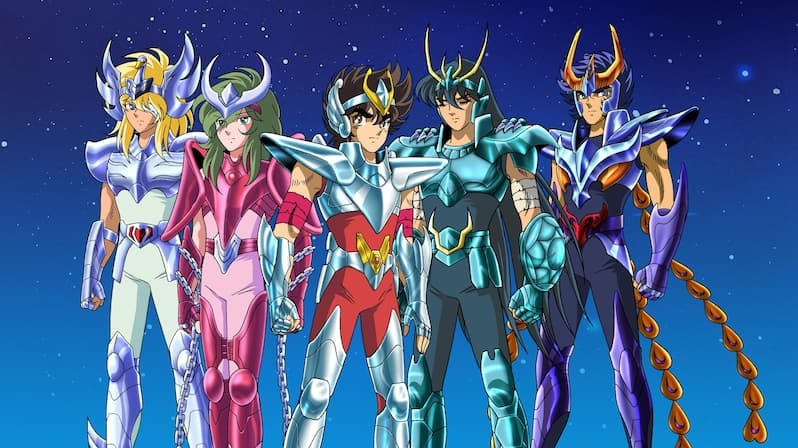
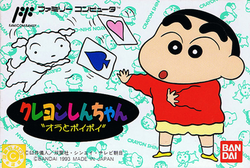
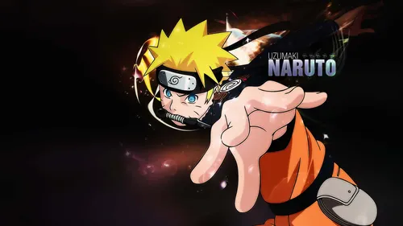

Caballeros del Zodiaco
Los Caballeros del Zodiaco nos cuenta la historia de un grupo de jóvenes que luchan
por proteger a Atenea, la diosa de la Justicia. Cada uno lleva una armadura de la constelación del
zodiaco, usando el poder del cosmos que es una energía que sale de su fuerza interior.
Sus protagonistas son Seiya,
Shiryu, Hyoga, Shun y Ikiki y nos muestran valores como la amistad, el esfuerzo y la
superación, mientras combaten a enemigos muy poderosos, como otros caballeros o incluso dioses del Olimpo.
Aunque en España
se estrenó en 1990, sigue siendo una serie muy querida por los fans del anime y una de las series más
recordadas de su época junto a Bola de Dragón.
Shin Chan
Shin Chan nos cuenta las divertidas y alocadas aventuras de un niño de cinco años llamado Shinnosuke Nohara,
que vive en Japón junto a su familia. Con su carácter travieso y sus ocurrencias descaradas, Shin Chan
provoca situaciones muy divertidas tanto en casa como en el colegio.
A través de su humor, la serie muestra la vida cotidiana de una familia japonesa con un tono divertido,
satírico y entrañable.
Sus protagonistas principales son su madre Misae, su padre Hiroshi, su hermana
pequeña Himawari y su grupo de amigos, que siempre acompañan a Shin Chan en sus travesuras.
Estrenada en los años 90, sigue siendo una de las series más queridas y populares del
anime humorístico japonés, famosa por su estilo desenfadado y su crítica social con humor.
Naruto
Naruto es un joven ninja llamado Naruto Uzumaki, que vive en la aldea oculta de Konoha y sueña con convertirse
en Hokage, el líder más fuerte y respetado de su pueblo.
A pesar de haber crecido solo y ser rechazado por los demás, Naruto nunca se rinde y
demuestra un gran espíritu de lucha y perseverancia.
En su camino hacia su sueño, se enfrenta a peligrosos enemigos y forma fuertes lazos de amistad
con sus compañeros Sasuke Uchiha y Sakura Haruno, bajo la guía de su maestro Kakashi Hatake.
La serie combina acción, humor y emoción, y nos enseña valores como la determinación, la amistad y la superación personal,
convirtiendo a Naruto en uno de los animes más populares y queridos del mundo.